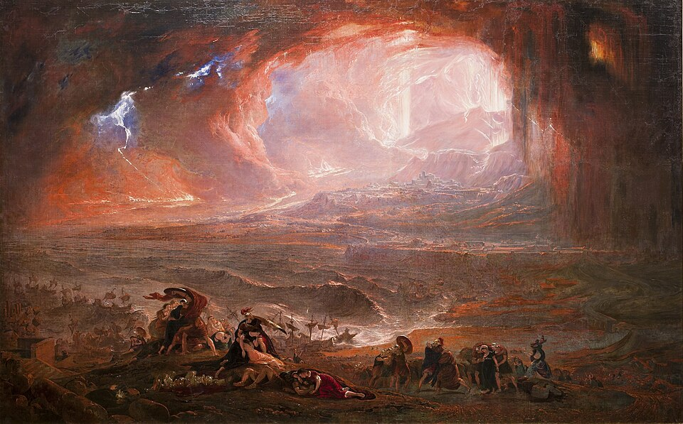

El Vesubio revienta en fuego y sepulta a Pompeya bajo la ceniza
Desde la hora séptima una columna de humo y ceniza con forma de pino se alza sobre la bahía, y llueve piedra ardiente sobre Pompeya, Herculano y Estabia. Miles huyen por los caminos y por el mar en una oscuridad de noche cerrada. Del almirante Plinio, que zarpó de Miseno con sus naves para socorrer a los atrapados, no se tienen noticias.

Hacia la hora séptima de este día, el monte Vesubio, que los campesinos de Campania tenían por un cerro manso cubierto de viñas, se abrió con un estruendo que se oyó en toda la bahía. De su cima se levantó una columna prodigiosa de humo y ceniza que subía derecha hacia el cielo y luego se abría en lo alto: un joven de Miseno, sobrino del almirante Plinio y testigo culto del portento, la comparó con un pino de esos que alzan el tronco desnudo y despliegan arriba sus ramas. Poco después comenzó a llover del cielo una piedra liviana y ardiente.
La piedra pómez cae sin descanso sobre Pompeya, sobre Herculano y sobre Estabia, y con ella una ceniza espesa que convierte el mediodía en noche cerrada. Los techos ceden bajo el peso; las calles se llenan de fugitivos que caminan con almohadas atadas a la cabeza para guardarse de la pedrada. Los caminos que salen de Pompeya son un solo río de gente, de carros y de animales despavoridos, y en la costa miles se disputan las barcas, aunque el mar, agitado y sembrado de piedra flotante, apenas deja bogar. La tierra tiembla a cada rato, y cada temblor arranca de la multitud un solo grito.
Nada hacía temer semejante furia. El Vesubio pasaba por monte fértil y bienhechor: sus laderas dan un vino celebrado, y en su falda prosperaban villas y huertos. Es verdad que hace años un gran temblor de tierra castigó a Pompeya y derribó templos y pórticos que aún se estaban reparando; pero nadie unió aquel aviso con la montaña, y los sabios que este diario pudo consultar confiesan no conocer memoria ni escrito de que el monte haya arrojado fuego alguna vez. Los más leídos recuerdan al Etna de Sicilia, que arde desde siempre; mas del Vesubio se creía que dormía, si es que alguna vez estuvo despierto.
El almirante Plinio, que manda la flota de Miseno, hizo botar sus cuadrirremes apenas vio la nube y puso proa derecho adonde todos huían, para sacar por mar a los que quedaron atrapados bajo la costa. Refieren los marinos que quedaron en el puerto que iba dictando observaciones sobre el portento mientras la ceniza caía ya sobre la cubierta. De él, a la hora en que se escriben estas líneas, no se tienen noticias. Los fugitivos que llegan a Miseno y a Nápoles cuentan cosas que cuesta escribir: la oscuridad en pleno día, las antorchas al mediodía, madres que llaman a gritos a hijos que no responden.
Al caer esta tarde, donde ayer se veían los tejados de Pompeya no se ve más que un manto gris que sigue creciendo. La ciudad entera, con sus foros, sus templos y sus muertos, ha quedado sepultada bajo varas de ceniza, y Herculano ha corrido suerte pareja. Este diario ignora qué fuego esconden las entrañas de la tierra y por qué eligió este día para mostrarse; solo consigna que una montaña tenida por mansa guardaba dentro un horno, y que Pompeya ha sido borrada del mundo, quizá para siempre, como si los dioses hubieran querido guardarla entera bajo un sello de ceniza.